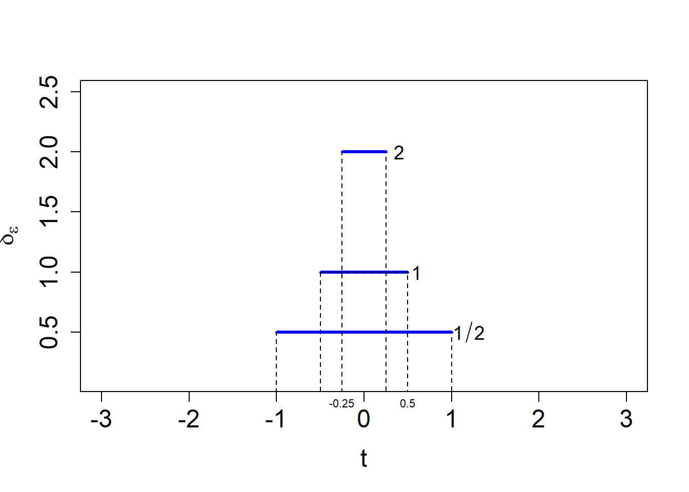
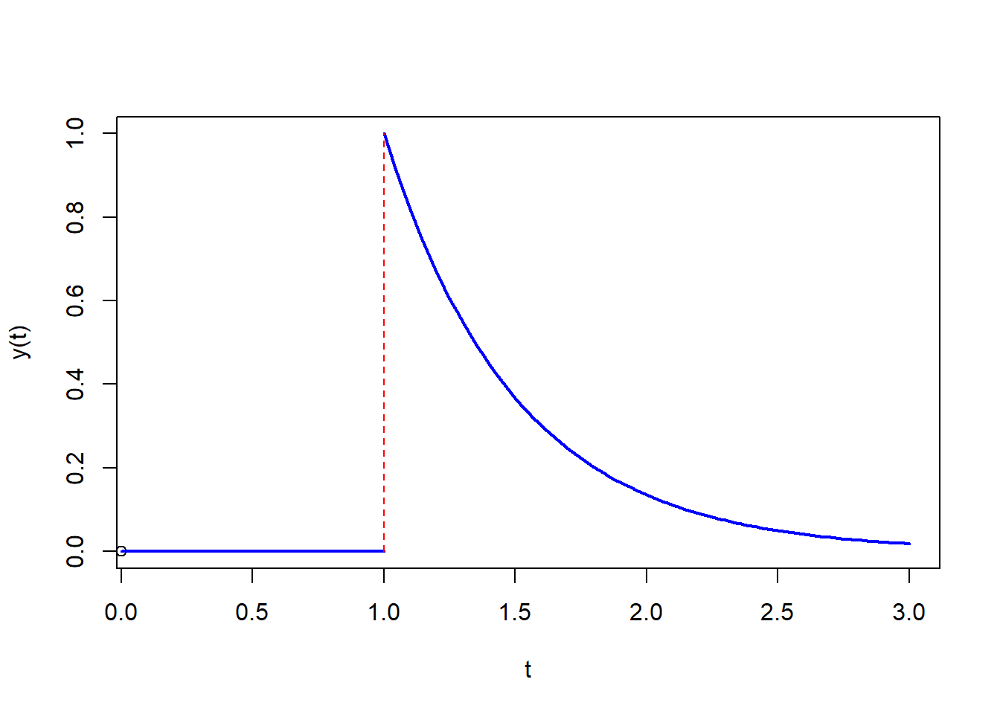

11 L28: Impulse forcing functions (8.7)
11.1 Unit Impulse
Let \[\delta_\epsilon = \frac{1}{2\epsilon},\qquad -\epsilon<t<\epsilon\] \[=0,\qquad |t|\geq \epsilon \]
11.2 Unit Impulse plot
11.3 Area under the curve
\[\int_{-\infty}^{\infty} \delta_\epsilon (t) \,dt = \int_{-\epsilon}^\epsilon \frac{1}{2\epsilon}\, dt \] \[= \frac{t}{2\epsilon}\Big|_{-\epsilon}^\epsilon\] \[=\frac{1}{2}-\left(-\frac{1}{2}\right)\] \[=1\]
11.4
NoteDefinition
The generalized function \[\delta(t)=\lim_{\epsilon \rightarrow 0} \delta_\epsilon (t)\] is called the Dirac delta function.
11.5 Properties of \(\delta(t)\)
\[1)\quad \int_{-\infty}^{\infty} \delta (t) \,dt = 1\] \[2)\quad\delta(t)=0,\qquad t\neq 0\] \[\qquad=\infty,\qquad t= 0\] \[3)\quad\delta(t-a)=0,\qquad t\neq a\] \[\qquad=\infty,\qquad t= a\]
11.6
Theorem 11.1 \[\boxed{\mathscr{L}\{\delta(t-a)\}=e^{-as}},\qquad a>0,\quad s>0\]
Proof:
\[\mathscr{L}\{\delta(t-a)\}=\int_0^\infty e^{-st}\delta(t-a)\,dt\] \[=\lim_{\epsilon \rightarrow 0} \int_0^\infty \delta_\epsilon (t-a) e^{-st}\,dt\]
Change of variables: \(u=t-a\rightarrow du=dt\)
\[=\lim_{\epsilon \rightarrow 0} \int_{-a}^\infty \delta_\epsilon (u) e^{-s(u+a)}\,du\]
\[=e^{-sa}\lim_{\epsilon \rightarrow 0} \int_{-a}^\infty \frac{1}{2\epsilon} e^{-su}\,du\]
\(a>\epsilon\), and by the definition of \(\delta_\epsilon\):
\[=e^{-sa}\lim_{\epsilon \rightarrow 0} \int_{-\epsilon}^\epsilon \frac{1}{2\epsilon} e^{-su}\,du\]
\[=e^{-sa}\lim_{\epsilon \rightarrow 0} \left[\left(\frac{e^{-su}}{-2s}\right)\Big|_{-\epsilon}^\epsilon\right]\] \[=e^{-sa}\lim_{\epsilon \rightarrow 0} \left(\frac{1}{-2s}\right)\left[e^{-s\epsilon} - e^{s\epsilon}\right]\]
\[=e^{-sa}\lim_{\epsilon \rightarrow 0} \left(\left[\frac{e^{s\epsilon} - e^{-s\epsilon}}{2s}\right]\right)\]1
\[= e^{-sa}\lim_{\epsilon \rightarrow 0} \left(\frac{\sinh s\epsilon}{s\epsilon}\right)\]
\[= e^{-sa}\lim_{\epsilon \rightarrow 0} (\cosh s\epsilon)\] \[=e^{-sa}\]
\[\qquad\square\]
11.7 Property 4 of Delta de Dirac
\[\boxed{\int_{-\infty}^\infty\delta(t-a)f(t)\,dt=f(a)}\]
11.8 Useful Laplace Transformations for Delta de Dirac.
For \(a>0,\quad s>0\):
\[\boxed{\mathscr{L}\{\delta(t-a)\}=e^{-as}}\]
\[\boxed{\mathscr{L}\{\delta(t-a)f(t)\}=e^{-as}f(a)}\]2
11.9 Other useful equations:
\[\boxed{\mathscr{L}\{u(t-a)f(t-a)\}=e^{-as}\mathscr{L}\{f(t)\}}\] \[\boxed{\mathscr{L}\{e^{at}\}=\frac{1}{s-a}}\] \[\boxed{\mathscr{L}\{\sinh {kt}\}=\frac{k}{s^2-k^2}}\]3
11.10 Example
Solve:
\[y'+2y=\delta(t-1),\qquad y(0)=0\] Solution:
\[sY+2Y=e^{-s}\] \[Y=\frac{e^{-s}}{(s+2)}\] \[\boxed{y(t) = u(t-1)e^{-2(t-1)}}\]
Note: \[\mathscr{L}\{u(t-a)f(t-a)\}=e^{-sa}\mathscr{L}\{f(t)\}\] Find which is the corresponding \(f(t)\) and then shift.
also: \[ \mathscr{L}\{e^{sa}\}=\frac{1}{s-a}\]
Plot of solution:

11.11 Example
Solve:
\[y''-4y=\delta(t-2)t,\qquad y(0)=0,\quad y'(0)=1\]
Solution:
\[\Rightarrow\]
\[s^2Y-1-4Y=2e^{-2s}\]
\[Y=\frac{2e^{-2s}+1}{s^2-4}\] \[Y(s)=\frac{2e^{-2s}}{s^2-2^2}+\frac{1}{s^2-2^2}\]
Applying the inverse:
\[y(t)=\mathscr{L}^{-1}\left\{\frac{2e^{-2s}}{s^2-2^2}\right\}+\frac{1}{2}\sinh 2t\] For the first term we can use:
\[\boxed{\mathscr{L}\{u(t-a)f(t-a)\}=e^{-as}\mathscr{L}\{f(t)\}}\] Then by inspection I identify \(a=2\), and \(f(t)=\sinh 2t\rightarrow f(t-a)= \sinh (2(t-2))\)
Finally:
\[\boxed{y(t)=u(t-2)\sinh(2(t-2))+\frac{1}{2}\sinh 2t}\]
11.12 References
11.13 Maxima-cas can
(%i1) laplace(delta(t-2)*t, t, s);(%o1) 2*%e^-(2*s)(%i2) ilt(2/(s^2-4),s,t);(%o2) %e^(2*t)/2-%e^-(2*t)/2(%i3) expand(trigrat(sinh(2*t)));(%o3) %e^(2*t)/2-%e^-(2*t)/2(%i4) partfrac(1/(s^2-4), s);(%o4) 1/(4*(s-2))-1/(4*(s+2))(%i5) desolve([diff(y(t),t,3)-diff(y(t),t,2)-4*diff(y(t),t,1)+4*y(t)=exp(t)],[y(t)]);(%o5) y(t) = (%e^-(2*t)*(3*('at('diff(y(t),t,2),t = 0)) -9*('at('diff(y(t),t,1),t = 0))+6*y(0)-1)) /36 -(%e^t*(3*('at('diff(y(t),t,2),t = 0))-12*y(0)+2))/9 +(%e^(2*t)*('at('diff(y(t),t,2),t = 0)+'at('diff(y(t),t,1),t = 0) -2*y(0)+1)) /4-(t*%e^t)/3you could check this result by calculating it by laplace and \(\delta\) definition.↩︎
https://proofwiki.org/wiki/Laplace_Transform_of_Hyperbolic_Sine↩︎